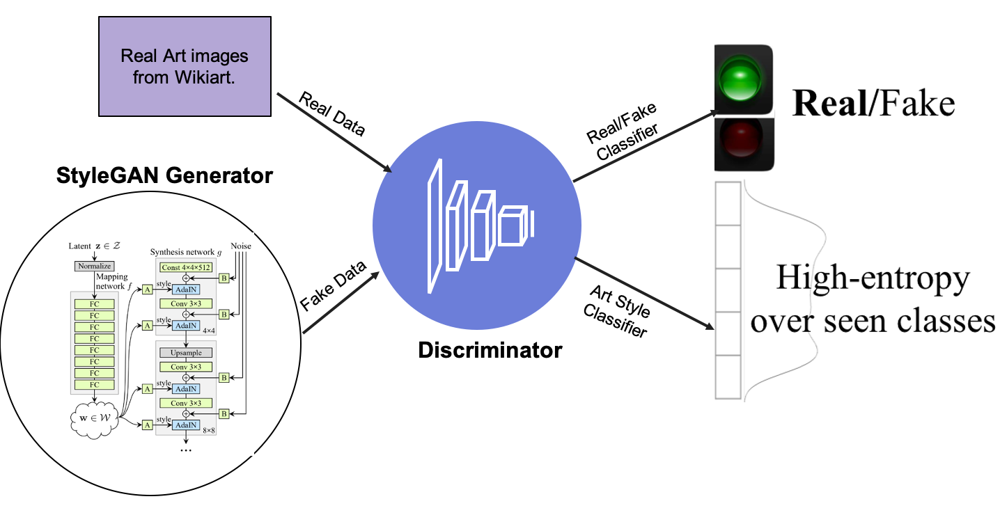
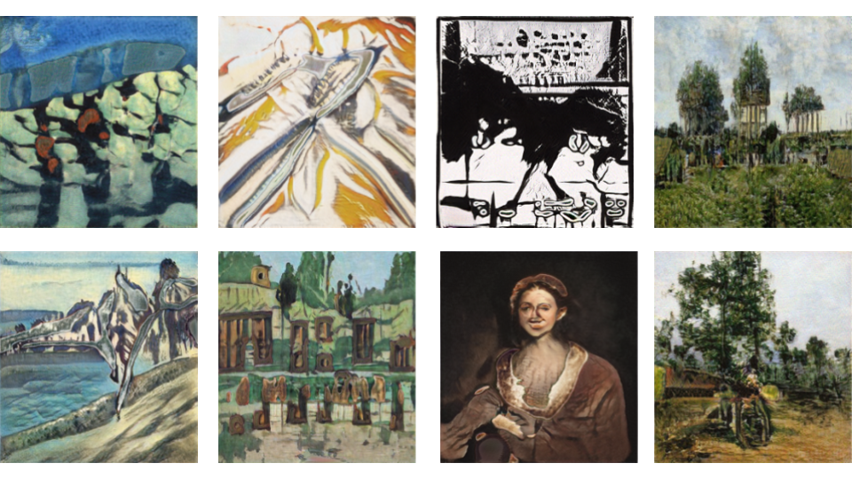

Wölfflin's Affective Generative Analysis for Visual Art
ICCC 2021
- Divyansh Jha
- Hanna H. Chang
- Mohamed Elhoseiny King Abdullah University of Science and Technology (KAUST)
Abstract
We propose Wölfflin Affective Generative Analysis (WAGA) as an approach to understand and analyze the progress of machine-generated artworks in contrast to real art and their connection to our human artistic heritage, and how they extend the shape of art history. Specifically, we studied the machine-generated art after integrating creativity losses in the state-of-the-art generative models e.g., StyleGAN v1 and v2. We denote these models as Style Creative Adversarial Networks v1 and v2; in short, StyleCAN v1 and v2. We contrasted the learned representation between real and generated artworks through correlation analysis between constructed emotion (collected through Amazon MTurk) and Heinrich Wölfflin (1846-1945)'s principles of art history. Analogous to the recent ArtEmis dataset, we collected constructed emotions and explanations on generated art instead of real art to study the contrast. To enable Wölfflin Affective Generative Analysis, we collected 45,000 annotations (1800 paintings x 5 principles x 5 participants) for each of the five Wölfflin principles on 1800 artworks; 1000 real and 800 generated. Our analysis shows a correlation exists between the Wölfflin principles and the emotions.
Responses collected when the above generated art work is shown to the viewer. The responses contain diverse set of emotions and various explanations for the same.
Video
Motivation
- There exists such analysis by Elgammal et. al. in 2018 in their paper The Shape of Art History in the Eyes of the Machine. But these analysis is only on real art. Since generated art work are becoming more and more popular we want to do this analysis on generated artwork. In contrast to (Elgammal et al. 2018), which used only real art for its analysis, our study focuses on the contrast between real and AI art generated using state-of-the-art GAN models like StyleGAN1 and StyleGAN2.
- We also want to discover correlations between emotion constructed in the viewer vs. the overall structure of the artwork. We model the structure of the artwork using Wölfflin principles data gathered on Amazon Mechanical Turk.
Contributions
- We introduce StyleCAN v1 and v2 by integrating the CAN loss StyleGAN v1 and StyleGAN v2 models and observe that StyleCAN v1 and v2 have higher mean average likeability compared to StyleGAN v1 and StyleGAN v2.
- We present a novel study on how AI Art generative models learn inherent features of our art heritage like Wolfflin’s principles. We also study the ability of these models to constructs our emotional experiences compared to real art
- We collect Wolfflin principles annotations on real and AI art. We also collect emotion labels and their explanation on AI art.
- Using the collected data, we performed detailed analysis that contrast real art and AI art based on Wolfflin’s principles, constructed emotion categories, and corresponding explanations. We also observed connections between Wolfflin’s ¨ principles and the constructed emotional experiences.
Wölfflin's principles collection interfaces
Heinrich Wölfflin (a swiss art historian) formulated five pairs of opposed or contrary precepts in the form and style of art of the sixteenth and seventeenth centuries which demonstrated a shift in the nature of artistic vision between the two periods. To collect these principles we trained the Amazon Mechanical Turkers using some sample examples. The user interface created for each is linked below.StyleCAN
 We attach the Holistic-CAN loss (Sbai et. al 2018) an improved version of CAN (Elgammal et. al. 2017) on state of the art GAN architectures like StyleGAN1(Karras et. al. 2019) and StyleGAN2 (Karras et. al. 2020). We name it Style Creative Adversarial Network (StyleCAN)Some sample generations
Likeability experiments
- How much do you like this image? (on a scale of 5)
- Do you think this image was created by artist or generated by computer?
Emotion experiments
Correlation analyses
Key observations
- We observe that the discriminator of GANs learn the Wolfflin principles inherently as we observe stronger correlation values as compared to traditional classifiers.
- We find that the generated art works construct diverse set of emotions in the viewer
- We also find strong correlation between these emotions and Wolfflin’s principles. We find these principles can be used to predict the emotion of an art piece. Hence, being able to compute specific Wolfflin priciple can predict the emotion that the art piece will construct.